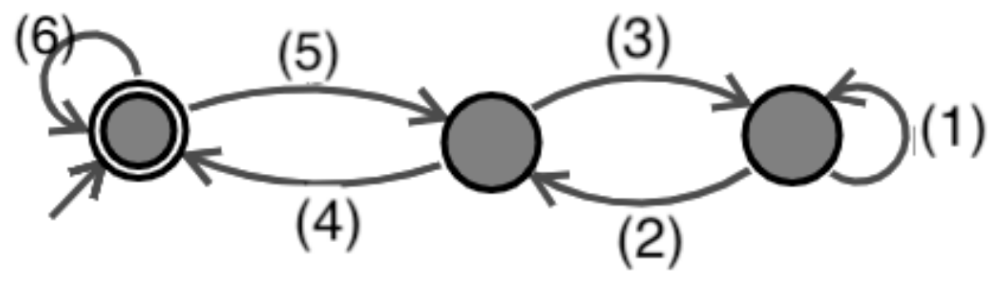
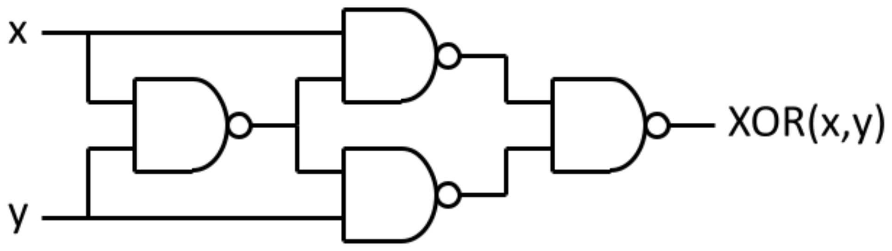

田中哲郎クラス｜7月28日 3限｜大問3
Little Man Computer シミュレータ（LMC）の機械語の命令集合の一部は以下の通り。
LDA n：n番地の内容をアキュムレータにコピーするADD n：n番地の値をアキュムレータの値に加えるSTA n：アキュムレータの値をn番地に格納するHLT：プログラムを終了するSUB n：アキュムレータの値からn番地の値を引くBRA n：無条件でn番地にジャンプBRP n：アキュムレータの値が非負（0または正）のときにn番地にジャンプBRZ n：アキュムレータの値がゼロのときにn番地にジャンプOUT：アキュムレータの値をシミュレータのOUTPUTに出力するたとえば、以下のプログラム（$n$は$1\le n\le20$の数字に置き換える）を考える。
| ラベル付き | アドレス付き | ||
|---|---|---|---|
| LOOP | LDA RESULT | 00 | LDA 11 |
| ADD i | 01 | ADD 12 | |
| STA RESULT | 02 | STA 11 | |
| LDA i | 03 | LDA 12 | |
| SUB ONE | 04 | SUB 13 | |
| STA i | 05 | STA 12 | |
| BRZ POS | 06 | BRZ 08 | |
| BRA LOOP | 07 | BRA 00 | |
| POS | LDA RESULT | 08 | LDA 11 |
| OUT | 09 | OUT | |
| HLT | 10 | HLT | |
| RESULT | DAT 0 | 11 | DAT 00 |
| i | DAT n | 12 | DAT n |
| ONE | DAT 1 | 13 | DAT 01 |
これは「1から$n$までの和をシミュレータのOUTPUTに出力する」プログラムであり、その実行ステップ数は$8n+2$となる（最後のHLT命令も実行ステップに数える）。
同様に後ろにつけるプログラム(1)（$x,y,z$は$1\le x\le50,\ 1\le y\le50,\ 1\le z\le50$の数字に置き換える）と、プログラム(1)と同じ計算をより少ないステップ数で行うプログラム(2)が与えられる（いずれも下記）。
プログラム(1)：
| ラベル付き | アドレス付き | ||
|---|---|---|---|
| LOOP | LDA Y | 00 | LDA 19 |
| SUB Z | 01 | SUB 20 | |
| BRP POS | 02 | BRP 07 | |
| LDA Y | 03 | LDA 19 | |
| ADD ONE | 04 | ADD 21 | |
| STA Y | 05 | STA 19 | |
| BRA UP | 06 | BRA 11 | |
| POS | BRZ END | 07 | BRZ 15 |
| LDA Y | 08 | LDA 19 | |
| SUB ONE | 09 | SUB 21 | |
| STA Y | 10 | STA 19 | |
| UP | LDA X | 11 | LDA 18 |
| ADD ONE | 12 | ADD 21 | |
| STA X | 13 | STA 18 | |
| BRA LOOP | 14 | BRA 00 | |
| END | LDA X | 15 | LDA 18 |
| OUT | 16 | OUT | |
| HLT | 17 | HLT | |
| X | DAT x | 18 | DAT x |
| Y | DAT y | 19 | DAT y |
| Z | DAT z | 20 | DAT z |
| ONE | DAT 1 | 21 | DAT 01 |
プログラム(2)：
| ラベル付き | アドレス付き | ||
|---|---|---|---|
| LDA Y | 00 | LDA 16 | |
| SUB Z | 01 | SUB 17 | |
| ADD X | 02 | ADD 15 | |
| STA T1 | 03 | STA 18 | |
| LDA Z | 04 | LDA 17 | |
| SUB Y | 05 | SUB 16 | |
| ADD X | 06 | ADD 15 | |
| STA T2 | 07 | STA 19 | |
| SUB T1 | 08 | SUB 18 | |
| BRP POS | 09 | BRP 12 | |
| LDA T1 | 10 | LDA 18 | |
| BRA END | 11 | BRA 13 | |
| POS | LDA T2 | 12 | LDA 19 |
| END | OUT | 13 | OUT |
| HLT | 14 | HLT | |
| X | DAT x | 15 | DAT x |
| Y | DAT y | 16 | DAT y |
| Z | DAT z | 17 | DAT z |
| T1 | DAT 0 | 18 | DAT 00 |
| T2 | DAT 0 | 19 | DAT 00 |
プログラム(1)は何をするプログラムか。実行ステップ数はいくつか。
プログラムをトレースすると：LOOPで$AC=Y-Z$を計算し、$AC\ge0$（$Y\ge Z$）ならPOSへ、$AC<0$（$Y<Z$）ならYを1増やしてUPへ。POSでは$AC=0$（$Y=Z$）ならENDへ抜け、そうでなければ（$Y>Z$）Yを1減らしてUPへ。UPでは必ずXを1増やしてLOOPに戻る。
つまり毎回のループで「YをZに1ずつ近づけ、YがZに一致するまでの回数だけXを1ずつ増やす」処理になっており、$Y=Z$になった時点のXの値を出力する。結果として $X+|Y-Z|$ を計算して出力するプログラムである。
$d=|y-z|$とすると、最後の1回（$Y=Z$になった回）はLOOP→POS→ENDの7ステップ、それ以外の$d$回は各11ステップ（LOOP〜UPを一巡）かかる。
プログラム(2)が同じ計算をしていることを説明し、実行ステップ数を求めよ。
プログラム(2)は $T_1=X+(Y-Z)$、$T_2=X+(Z-Y)$ をあらかじめ計算しておき、$T_2-T_1=2(Z-Y)$ の符号（$Z\ge Y$か否か）で大小を判定して、大きい方（$=X+|Y-Z|$）を出力する。$Y\ge Z$なら$T_1=X+(Y-Z)=X+|Y-Z|$が正しい答え、$Y<Z$なら$T_2=X+(Z-Y)=X+|Y-Z|$が正しい答えになっており、いずれにせよプログラム(1)と同じ$X+|Y-Z|$を出力する。
ループを一切使わない直線的な処理なので、$Z\ge Y$（分岐が取られる）なら13ステップ、$Z<Y$（分岐が取られない）なら14ステップで終わる——$d=|y-z|$が大きいときプログラム(1)よりずっと少ないステップ数で済む。
プログラム(1)(2)と同じ計算をおこない、実行ステップ数がプログラム(2)よりも小さいプログラムを作成しなさい（ラベル付き、アドレス付きのどちらかの形式を用いること）。
プログラム(2)は$T_1,T_2$の両方を計算する無駄がある。差$D=Y-Z$を1回だけ求め、その符号だけで「$X+D$」か「$X-D$」のどちらを出力するか分岐すれば、計算量は半分近くで済む：
| ラベル付き | |
|---|---|
| LDA Y | |
| SUB Z | |
| STA D | |
| BRP POS | |
| LDA X | |
| SUB D | |
| BRA END | |
| POS | LDA X |
| ADD D | |
| END | OUT |
| HLT | |
| D | DAT 0 |
$D=Y-Z$を求め（3ステップ）、$D\ge0$なら$X+D$（$=X+(Y-Z)=X+|Y-Z|$、$Y\ge Z$なので正しい）を、$D<0$なら$X-D$（$=X-(Y-Z)=X+(Z-Y)=X+|Y-Z|$、$Y<Z$なので正しい）を出力する。
プログラム(1)→(2)→(e)という流れは、「ループで1つずつ数え上げる」計算を「一度の引き算」に置き換えることでステップ数を劇的に減らせる、というアルゴリズム改善の典型例。(2)から(e)へはさらに、「両方の場合を計算してから選ぶ」のではなく「差を1回だけ求めて符号で分岐する」ことで、計算の重複を取り除いている——LMC/ED21のようなアキュムレータ型の機械語でも、通常のプログラミングと同じ計算量削減の発想がそのまま活きる。
2進数（0をa、1をbで表現）で上位の桁から与えていき（最上位に0が来る入力も扱う）、3の倍数だと受理し（終了状態になり）、3の倍数でない時は拒否する（非終了状態になる）オートマトンを作成した。下表左のチェック表の(a)〜(e)に「受理」または「拒否」のどちらが入るかを回答しなさい。また、下図右の(1)〜(6)の状態遷移の規則の文字の部分にaかbを入れると「3の倍数だと受理するオートマトン」が完成するが、(1)〜(6)のそれぞれにa,bのどちらが入るかを答えなさい。
| 入力 | 停止時の状態 |
|---|---|
| ab | 拒否 |
| ba | 拒否 |
| bb | 受理 |
| bba | 受理 |
| bbb | 拒否 |
| baaa | (a) |
| baab | (b) |
| bbaa | (c) |
| bbbab | (d) |
| baabb | (e) |

上位桁から読むので、状態は「これまで読んだ数の3を法とした余り」だけで表せる（新しい桁$d$を読むと新しい余り$=(2r+d)\bmod3$、$d=0$がa、$d=1$がb）。左（2重丸）＝余0（受理）、中＝余1、右＝余2 とすると、図の6本の遷移はすべてこの式から一意に決まる。
よって (1)=b、(2)=a、(3)=a、(4)=b、(5)=b、(6)=a。各状態からa・bの2本の遷移がちょうど1本ずつ出ている（余0：(6)a・(5)b／余1：(3)a・(4)b／余2：(2)a・(1)b）ことでも整合性を確認できる。
チェック表（値を2進数として求め3で割った余りで判定）：
3進法（0をa,1をb,2をcで表現）で上位の桁から与えていき、4の倍数だと受理するオートマトンを、なるべく少ない状態数で実現し、(A)の状態遷移図と同じような図を書きなさい。
上位桁から読む場合、状態は「これまでの値を4で割った余り」（0,1,2,3の4通り）だけで表せる。新しい桁$d\in\{0,1,2\}$（a,b,cに対応）を読むと、新しい余り$=(3r+d)\bmod4$。余り0が受理状態。
| 状態（余り） | a（0） | b（1） | c（2） |
|---|---|---|---|
| 0（受理・開始） | 0 | 1 | 2 |
| 1 | 3 | 0 | 1 |
| 2 | 2 | 3 | 0 |
| 3 | 1 | 2 | 3 |
（例：$3r+d\bmod4$で、状態1でaを読む場合 $3\times1+0=3$。）4状態が必要かつ十分（4で割った余りは4通りしかなく、それぞれ区別する必要があるため、これより少なくはできない）。
個別問題2024(B)で見たように、下位桁から読む倍数判定オートマトンは「桁の重みの巡回」を状態に含める必要があり状態数が増えがちだが、上位桁から読む場合は「これまでの値をmで割った余り」だけで状態が決まり、必要な状態数はちょうど$m$個（$m$を法とする剰余類の数）で済む、というシンプルな対比がある。
$x,y$の排他的論理和$XOR(x,y)$（exclusive or、EOR、EXOR等とも書かれる）の真理値表は以下のように書かれる。
| x | y | XOR(x, y) |
|---|---|---|
| 0 | 0 | 0 |
| 0 | 1 | 1 |
| 1 | 0 | 1 |
| 1 | 1 | 0 |
この関数のブール代数表現を主加法標準形（積和標準形）で書くと$\bar xy+x\bar y$となる。また、$XOR(x,y)$は下図のように4個のNANDで実現できる。これを踏まえ、下の真理値表を持つ$f(x,y,z)$について答えよ。

| x | y | z | f |
|---|---|---|---|
| 0 | 0 | 0 | 0 |
| 0 | 0 | 1 | 0 |
| 0 | 1 | 0 | 0 |
| 0 | 1 | 1 | 1 |
| 1 | 0 | 0 | 1 |
| 1 | 0 | 1 | 0 |
| 1 | 1 | 0 | 1 |
| 1 | 1 | 1 | 1 |
$f(x,y,z)$の主加法標準形（積和標準形）を書け。
主加法標準形では、真理値表で$f=1$となる各行につき1個の最小項を作る。入力が0の変数には否定を、1の変数にはそのままの記号を付けるので、011→$\bar xyz$、100→$x\bar y\bar z$、110→$xy\bar z$、111→$xyz$。これらをORで結べばよい：
$f(x,y,z)$を4個以下のNANDのみを使ってMIL記法で書け。
主加法標準形をそのまま4項使うと素子数が多くなりすぎるので、まず簡単化する。カルノー図で見ると、実は$xy$の項は他の2項に完全に吸収されて不要であることが分かる（$x\bar y\bar z$と$xy\bar z$から$x\bar z$、$\bar xyz$と$xyz$から$yz$がそれぞれ導け、この2項だけで4つの1をすべて覆える）：
全行で検算すると一致することが確かめられる。これは「$z=0$なら$x$を、$z=1$なら$y$を選ぶ」2:1マルチプレクサそのもの（個別問題2024の大問2と同型）。ド・モルガンの法則を使ってNAND-NANDネットワークに変換すると：
真理値表から機械的に作った主加法標準形（積和標準形）は、必ず正しい関数を表すが、素子数が最小とは限らない。カルノー図やブール代数の簡単化（不要項の除去、隣接する項のくくり出し）を行って初めて、少ないゲート数（ここでは2項・4NAND）で実現できる回路にたどり着ける、という点が本問と個別問題2024・2025の論理設計問題に共通するポイント。